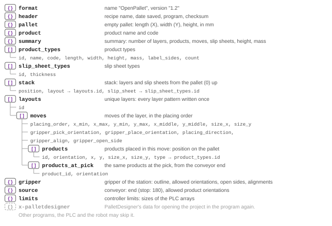

OpenPallet 1.2 file
OpenPallet 1.2An OpenPallet file is JSON. Its top-level keys have a fixed order, and what belongs together lies nested in them: the moves in the unique layer, the products in the move.


- Recognition:
format.name="OpenPallet"andformat.version1.2 or a later 1.x: read. Another name or version: reject. Skip unknown keys. - Later 1.x versions add only optional fields: a program that reads 1.2 reads every later 1.x file.
- Units: positions and sizes in mm, mass in g, orientations and directions in degrees (whole numbers). Slip sheet
thickness and
summary.heightin mm with one decimal place. - A pallet without a mix (
summary.mixfalse): one product type,id1, and the products in the moves have no fieldtype. - Checksum (
header.checksum): CRC-32 (8 hex characters) of the JSON without it, keys sorted, no spaces, non-ASCII characters as\uXXXX, whole numbers without.0.